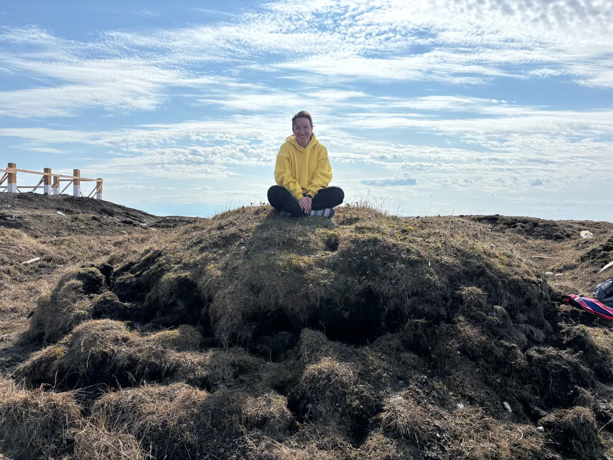
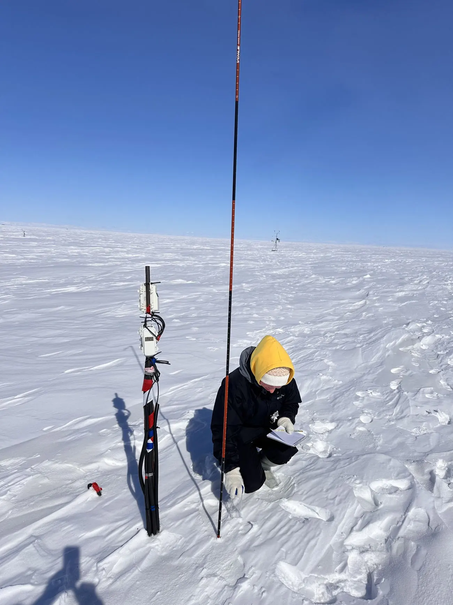

01 /
Snow, water & thaw
Snow redistribution, drainage, vegetation, and infrastructure create different ground-temperature and thaw conditions even over short distances.
SNOW COVERHYDROLOGYTHAW
PERMAFROST · HYDROLOGY · GEOPHYSICS
I’m Valentina Ekimova, a scientist working to understand why neighboring Arctic landscapes can respond so differently to environmental change — from the snow at the surface to the frozen ground below.

01 / RESEARCH
From landscape-scale field observations to controlled laboratory experiments, I study interacting surface and subsurface processes that shape Arctic permafrost.
Snow redistribution, drainage, vegetation, and infrastructure create different ground-temperature and thaw conditions even over short distances.
Electrical resistivity tomography and ground-penetrating radar help reveal subsurface heterogeneity and the ways infrastructure affects frozen ground.
Laboratory experiments explore salt migration, ice melting, sediment properties, and the coupled processes affecting permafrost and gas hydrates.
02 / FIELD NOTES
From winter snow monitoring to summer water measurements and permafrost exposures, field observations reveal why conditions vary across Arctic terrain.

Snow is more than a seasonal cover. Its distribution helps control heat exchange between the atmosphere and ground — an important piece of understanding why thaw varies across Arctic landscapes.
My fieldwork includes snow observations and micrometeorological monitoring that help link surface conditions to subsurface behavior.
71° N / UTQIAĠVIK, ALASKAImages from my Arctic research, field teaching, and scientific observations.
Field photographs of tundra hydrology, permafrost exposures, and buildings within the Arctic landscape.
03 / PUBLICATIONS
Selected papers and an invited book chapter exploring Arctic permafrost, geophysics, and frozen-ground processes.
OPEN-ACCESS JOURNAL ARTICLE
Ekimova, V., Nelson, M. A., Sullivan, T., Douglas, T. A., Epstein, H. E., & Jull, M. G. · The Cryosphere, 20, 265–283.
Read the paper ↗Ekimova et al. · Submitted to Permafrost and Periglacial Processes (status in October 2026 CV).
Ekimova, V. · Encyclopedia of Climate System Science, Elsevier.
Chuvilin et al. · Earth’s Cryosphere, 30(2), 41–53.
Chuvilin et al. · Georesursy, 27(3), 20–30.
Chuvilin et al. · Energy & Fuels, 37(7), 5331–5340.
Chuvilin et al. · Geosciences, 12(7), 276.
For additional publications and citations: Google Scholar ↗
04 / TEACHING & MENTORING
For me, teaching is about making Earth processes tangible — in the classroom, the laboratory, and the Arctic field.
Connecting classroom concepts with observations from Arctic field sites.
I've taught and mentored students in environmental sciences, geology, chemistry, and frozen sediment research, with an emphasis on hands-on methods and collaborative problem-solving.
Guest lecturer & field instructor · University of Virginia
Guest lecturer · Iḷisaġvik College, Utqiaġvik
Guest lecturer · University of Virginia
Teaching assistant & co-instructor roles · Skoltech
05 / COMMUNITY CONNECTIONS
Research in the Arctic is most meaningful when scientific findings can be shared with the people and communities connected to the landscape.
In Utqiaġvik, I shared research findings on Isatkoak Lagoon water quality with Barrow Utilities and Electric Cooperative (BUECI), discussing environmental patterns and their implications for local water resources.
Other outreach activities have included conversations with the BUECI water-treatment team and research presentations at Iḷisaġvik College.
Let’s collaborate ↗06 / FIELD NOTES & UPDATES
Occasional reflections on field science, teaching, and the people and places that shape my work. Selected writing originally shared on LinkedIn.
TEACHING & MENTORING · 2026
Reflections on reflective teaching, mentorship, and why standing in Arctic water can lead to memorable learning moments.
Read on LinkedInPERMAFROST PERSPECTIVES · 2026
A look into the historical observations, scientific ideas, and engineering decisions that shaped our understanding of building on frozen ground.
Read on LinkedInARCTIC RESEARCH · 2026
Lessons from ASSW 2026 on Indigenous knowledge, listening, collaboration, and research developed with Arctic communities.
Read on LinkedInFROM THE LAB · 2025
Connecting experimental studies of frozen hydrate-bearing sediments and cryopeg chemistry with broader questions in permafrost science.
Read on LinkedIn07 / ABOUT ME
I'm a postdoctoral researcher in the Department of Environmental Sciences at the University of Virginia, working at the intersection of permafrost science, geophysics, hydrology, and climate-related landscape change.
My research began with laboratory experiments investigating the behavior of frozen sediments and gas hydrates. Today, I combine that understanding of subsurface processes with field observations, geophysical surveys, and environmental measurements in the Arctic.
Across both settings, I am drawn to the same question: how do subtle differences in environmental conditions lead to very different outcomes?
View academic CVLET'S CONNECT
Interested in Arctic fieldwork, permafrost research, environmental change, or new collaborations? I'd love to hear from you.